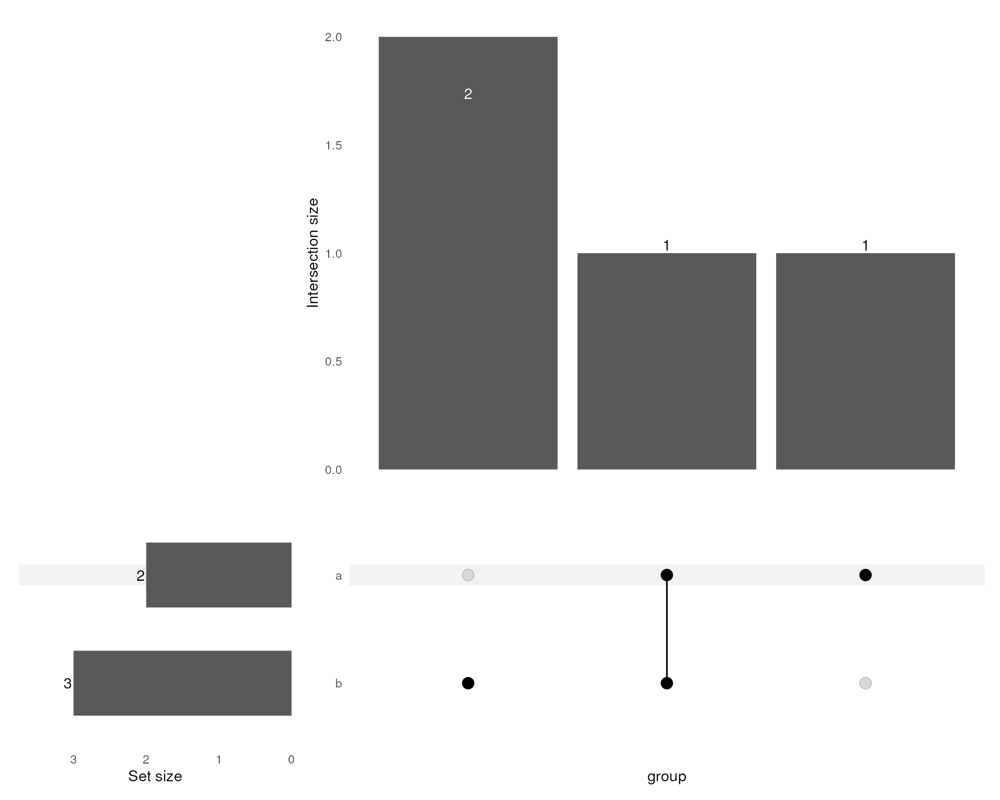
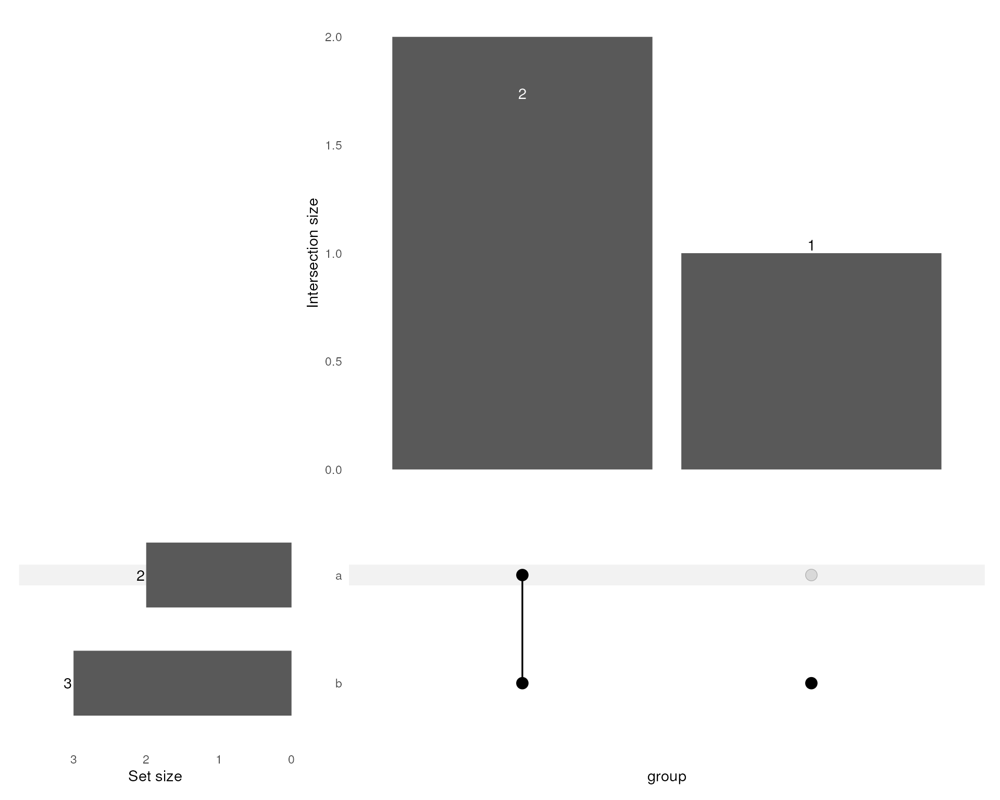
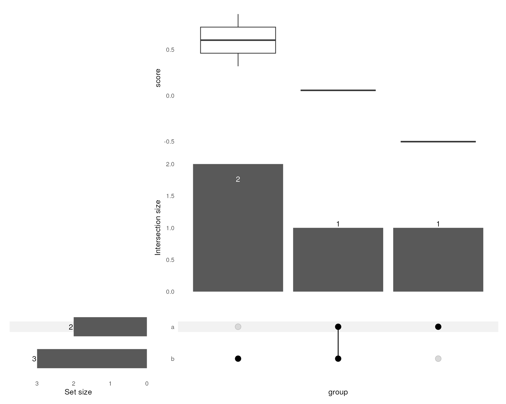

extraChIPs: Differential Binding Analysis
Stevie Pederson
Black Ochre Data Laboratories, Telethon Kids Institutestephen.pederson.au@gmail.com Source:
vignettes/differential_binding.Rmd
differential_binding.RmdIntroduction
The GRAVI workflow,
for which this package is designed, uses sliding windows for
differential binding analysis in a manner similar to the package
csaw, but also incorporating macs2 peaks. The
workflow itself extends to integrating multiple ChIP targets and
external data sources, and as such, this package introduces a handful of
functions to enable these analyses.
The majority of examples below use extremely simplified datasets to provide general guidance on using the functions. Some results may appear trivial as a result, but will hopefully prove far more useful in a true experimental context.
Installation
In order to use the package extraChIPs and follow this
vignette, we recommend using the package BiocManager hosted
on CRAN. Once this is installed, the additional packages required for
this vignette (tidyverse, Rsamtools,
csaw, BiocParallel and
rtracklayer) can also be installed.
if (!"BiocManager" %in% rownames(installed.packages()))
install.packages("BiocManager")
pkg <- c("tidyverse", "Rsamtools", "csaw", "BiocParallel", "rtracklayer")
BiocManager::install(pkg)
BiocManager::install("extraChIPs")Differential Binding and ChIP-Seq Analysis
Sliding Windows
The starting point for differential binding analysis using sliding windows is to define windows, then count reads within each window using the bam files. Commonly one or IP input/control samples is also produced during a ChIP-Seq experiment. The example files provided here contain a small subset of reads from chromosome 10 across two experimental and one input sample.
The approach taken below is to define a set of sliding windows, using
the capabilities of csaw, but to then use macs
peaks to define regions of most likely signal. First we can define our
windows and count the alignments using existing tools. In the following,
we’ll use a sliding window of 180bp and a step size of 60bp, meaning
each nucleotide is covered by 3 windows.
library(tidyverse)
library(Rsamtools)
library(csaw)
library(BiocParallel)
library(rtracklayer)
bfl <- system.file(
"extdata", "bam", c("ex1.bam", "ex2.bam", "input.bam"), package = "extraChIPs"
) %>%
BamFileList()
names(bfl) <- c("ex1", "ex2", "input")
rp <- readParam(
pe = "none",
dedup = TRUE,
restrict = "chr10"
)
wincounts <- windowCounts(
bam.files = bfl,
spacing = 60,
width = 180,
ext = 200,
filter = 1,
param = rp
)This produces a RangesSummarizedExperiment with windows
included which passed the minimum threshold of 1 total read. As we’ve
only counted reads within a very small window, the complete library
sizes will be highly inaccurate. The true library sizes can be added
here noting that this step is not normally required,
but given these values are essential for accurate CPM values, they will
be added here.
wincounts$totals <- c(964076L, 989543L, 1172179L)We can also add some key information to the colData
element of this object, which will also be propagated to all downstream
objects.
wincounts$sample <- colnames(wincounts)
wincounts$treat <- as.factor(c("ctrl", "treat", NA))
colData(wincounts)## DataFrame with 3 rows and 6 columns
## bam.files totals ext rlen sample treat
## <character> <integer> <integer> <integer> <character> <factor>
## ex1 /__w/_temp/Library/e.. 964076 200 73 ex1 ctrl
## ex2 /__w/_temp/Library/e.. 989543 200 74 ex2 treat
## input /__w/_temp/Library/e.. 1172179 200 74 input NAA density plot can be simply drawn of these counts, with the vast majority of windows receiving very low counts, due to the nature of transcription factor binding, where long stretches are unbound. The windows with higher counts tend to be associated with the samples targeting a transcription factor (TF), as seen in the two treatment group samples.
library(extraChIPs)
plotAssayDensities(wincounts, colour = "treat", trans = "log1p")
Filtering of Sliding Windows
After counting all reads in the sliding windows, the next step is to
discard windows for which counts are unlikely to represent TF binding.
The package extraChIPs uses a set of consensus peaks to
automatically set a threshold based on 1) counts strongly above the
counts from the input sample, and 2) the windows with the overall
highest signal. Thresholds are determined such that q = 0.5
of the retained windows overlap on of the supplied consensus peaks.
Higher values for q will return more windows, however many
of these will tend to only marginally overlap a peak. Experience has
shown that values such as q = 0.5 tend to return a
considerable proportion of windows containing true TF binding
signal.
First we can load the peaks, supplied here as a simple
bed file.
peaks <- import.bed(
system.file("extdata", "peaks.bed.gz", package = "extraChIPs")
)
peaks <- granges(peaks)The we can pass these to the function dualFilter() which
utilises the strategy described above. On large datasets, this can be
quite time-consuming, as can the initial counting step. Due to the small
example dataset, a more inclusive threshold for q will be
used here.
filtcounts <- dualFilter(
x = wincounts[, !is.na(wincounts$treat)],
bg = wincounts[, is.na(wincounts$treat)],
ref = peaks,
q = 0.8 # Better to use q = 0.5 on real data
)The returned object will by default contain counts and
logCPM assays, with the complete library sizes used for the
calculation of logCPM values.
plotAssayDensities(filtcounts, assay = "logCPM", colour = "treat")
plotAssayPCA(filtcounts, assay = "logCPM", colour = "treat", label = "sample")
Whilst the initial set of counts contained 1007 windows, these have now been reduced to 108 windows. Similarly, the input sample is no longer included in the data object.
dim(wincounts)## [1] 1007 3
dim(filtcounts)## [1] 108 2The rowData element of the returned object will contain
a logical column indicating where each specific retained window
overlapped one of the supplied consensus peaks.
rowRanges(filtcounts)## GRanges object with 108 ranges and 1 metadata column:
## seqnames ranges strand | overlaps_ref
## <Rle> <IRanges> <Rle> | <logical>
## [1] chr10 103865521-103865700 * | TRUE
## [2] chr10 103865581-103865760 * | TRUE
## [3] chr10 103865641-103865820 * | TRUE
## [4] chr10 103865701-103865880 * | TRUE
## [5] chr10 103874161-103874340 * | FALSE
## ... ... ... ... . ...
## [104] chr10 103911901-103912080 * | FALSE
## [105] chr10 103911961-103912140 * | FALSE
## [106] chr10 103912021-103912200 * | FALSE
## [107] chr10 103912081-103912260 * | FALSE
## [108] chr10 103912261-103912440 * | FALSE
## -------
## seqinfo: 1 sequence from an unspecified genome## [1] 0.7314815Using Voom
Multiple approaches are available for analysis of differential
binding, and given the small example dataset, only a brief example of
conventional results will be used. extraChIPs does provide
a simple coercion function to convert logCPM to a
voom object, which requires the relationship between
library sizes and logCPM
values to be intact. Whist this will not be discussed further
here should this be a viable approach for an analysis, the following
code may prove helpful.
v <- voomWeightsFromCPM(
cpm = assay(filtcounts, "logCPM"),
lib.size = filtcounts$totals,
isLogCPM = TRUE
)Merging Windows
After an analysis has been performed, common values contained in the
output may be estimated signal (logCPM), estimated change
(logFC) with both raw and adjusted p-values. Given the
dependency of neighbouring windows, any adjusted p-values will not be
appropriate and a merging of overlapping windows will be performed.
For our example dataset we’ll add these manually, however this is just for demonstration purposes for the eventual merging of windows.
rowRanges(filtcounts)$logCPM <- rowMeans(assay(filtcounts,"logCPM"))
rowRanges(filtcounts)$logFC <- rowDiffs(assay(filtcounts,"logCPM"))[,1]
rowRanges(filtcounts)$PValue <- 1 - pchisq(rowRanges(filtcounts)$logFC^2, 1)Now we have some example values, we can merge any overlapping windows
using mergeByCol(). During this process, overlapping ranges
are merged into a single range with representative values taken from one
of the initial sliding windows. The recommended approach for retaining
statistical independence between windows is to choose the window with
the largest signal as representative of the entire merged window.
res_gr <- mergeByCol(filtcounts, col = "logCPM", pval = "PValue")
res_gr$overlaps_ref <- overlapsAny(res_gr, peaks)A GRanges object is returned with representative values
for each merged window. The mcol keyval_range
provides the original range from which the representative values were
taken. A column with adjusted p-values will also be added if
p_adj_method is not set to “none”.
Mapping of Windows To Genes
Once the binding characteristics of a transcription factor have been
characterised, a common next step is to assess which genes are likely to
be under regulatory influence. Whilst no definitive, single methodology
exists for this process, the function mapByFeature() offers
an intuitive approach, taking into account any defined regulatory
features. These regulatory features may be defined by simple proximity
to TSS regions, by histone marks, downloaded from external repositories
or any other possibility. Whilst these features can improve the
precision of mapping, even without these this function can still enable
a useful assignment of target gene to binding event.
The process undertaken inside mapByFeature() is a
sequential checking of each range’s association with regulatory features
and the most likely target as a result. These steps are:
- Check for any HiC interactions
- All genes which directly overlap an interaction anchor are considered part of the regulatory network for that interaction, and as such, all genes associated with both anchors are assigned to a peak which overlaps a HiC Interaction
- Check for any overlaps with a promoter
- All genes regulated by that promoter are assigned as regulatory
targets. By default, this is by direct promoter/gene overlap
(
prom2gene = 0)
- Check for any overlaps with an enhancer
- Peaks which overlap an enhancer are assigned to all genes
within the distance specified by
enh2gene(default = 100kb)
- Check for genes with no previous mappings
- Peaks with no previous mappings are assigned to all
directly overlapping genes, or the nearest gene within a specified
distance (default
gr2gene= 100kb)
As a result, if no promoters, enhancers or interactions are supplied, all genes will be mapped to peaks using step 4
The two essential data objects to perform simple gene assignment are
1) a set of ranges representing binding events of interest, such as
res_gr above, and 2) a set of ranges defining genes, as
contained in the example dataset ex_genes. This contains
the two mcols gene and symbol, and we can
ask for both in the returned object.
data("ex_genes")
data("ex_prom")
mapByFeature(
res_gr, genes = ex_genes, prom = ex_prom, cols = c("gene", "symbol")
)## GRanges object with 9 ranges and 11 metadata columns:
## seqnames ranges strand | n_windows n_up n_down
## <Rle> <IRanges> <Rle> | <integer> <integer> <integer>
## [1] chr10 103865521-103865880 * | 4 0 3
## [2] chr10 103874161-103874940 * | 8 1 6
## [3] chr10 103876921-103878000 * | 16 0 6
## [4] chr10 103878601-103878840 * | 2 1 1
## [5] chr10 103878961-103881060 * | 33 0 17
## [6] chr10 103881181-103881540 * | 4 1 2
## [7] chr10 103892161-103893420 * | 19 5 12
## [8] chr10 103899841-103900560 * | 10 2 5
## [9] chr10 103911481-103912440 * | 12 3 7
## keyval_range logCPM logFC PValue PValue_fdr
## <GRanges> <numeric> <numeric> <numeric> <numeric>
## [1] chr10:103865521-103865700 3.46979 -0.5610608 0.574756 0.975993
## [2] chr10:103874641-103874820 4.24295 -0.1115489 0.911181 0.975993
## [3] chr10:103877281-103877460 5.61526 -1.4816426 0.138435 0.975993
## [4] chr10:103878661-103878840 3.35589 -0.0300928 0.975993 0.975993
## [5] chr10:103880281-103880460 7.72879 -0.6250501 0.531938 0.975993
## [6] chr10:103881241-103881420 3.73440 -0.0318288 0.974609 0.975993
## [7] chr10:103892581-103892760 7.40460 -0.0633132 0.949517 0.975993
## [8] chr10:103900141-103900320 4.64587 0.1423445 0.886808 0.975993
## [9] chr10:103911901-103912080 4.81325 -0.1924133 0.847419 0.975993
## overlaps_ref gene symbol
## <logical> <CharacterList> <CharacterList>
## [1] TRUE ENSG00000198728 LDB1
## [2] FALSE ENSG00000198728 LDB1
## [3] TRUE ENSG00000198728 LDB1
## [4] FALSE ENSG00000198728 LDB1
## [5] TRUE ENSG00000198728 LDB1
## [6] TRUE ENSG00000198728 LDB1
## [7] TRUE ENSG00000148840 PPRC1
## [8] TRUE ENSG00000148840 PPRC1
## [9] FALSE ENSG00000166197 NOLC1
## -------
## seqinfo: 1 sequence from an unspecified genomeFor this dataset, we have an example HiC interaction, which we can now pass to the mapping process. (This time we’ll save the object)
data("ex_hic")
res_gr_mapped <- mapByFeature(
res_gr,
genes = ex_genes,
prom = ex_prom,
gi = ex_hic,
cols = c("gene", "symbol")
)
res_gr_mapped## GRanges object with 9 ranges and 11 metadata columns:
## seqnames ranges strand | n_windows n_up n_down
## <Rle> <IRanges> <Rle> | <integer> <integer> <integer>
## [1] chr10 103865521-103865880 * | 4 0 3
## [2] chr10 103874161-103874940 * | 8 1 6
## [3] chr10 103876921-103878000 * | 16 0 6
## [4] chr10 103878601-103878840 * | 2 1 1
## [5] chr10 103878961-103881060 * | 33 0 17
## [6] chr10 103881181-103881540 * | 4 1 2
## [7] chr10 103892161-103893420 * | 19 5 12
## [8] chr10 103899841-103900560 * | 10 2 5
## [9] chr10 103911481-103912440 * | 12 3 7
## keyval_range logCPM logFC PValue PValue_fdr
## <GRanges> <numeric> <numeric> <numeric> <numeric>
## [1] chr10:103865521-103865700 3.46979 -0.5610608 0.574756 0.975993
## [2] chr10:103874641-103874820 4.24295 -0.1115489 0.911181 0.975993
## [3] chr10:103877281-103877460 5.61526 -1.4816426 0.138435 0.975993
## [4] chr10:103878661-103878840 3.35589 -0.0300928 0.975993 0.975993
## [5] chr10:103880281-103880460 7.72879 -0.6250501 0.531938 0.975993
## [6] chr10:103881241-103881420 3.73440 -0.0318288 0.974609 0.975993
## [7] chr10:103892581-103892760 7.40460 -0.0633132 0.949517 0.975993
## [8] chr10:103900141-103900320 4.64587 0.1423445 0.886808 0.975993
## [9] chr10:103911901-103912080 4.81325 -0.1924133 0.847419 0.975993
## overlaps_ref gene symbol
## <logical> <CharacterList> <CharacterList>
## [1] TRUE ENSG00000198728 LDB1
## [2] FALSE ENSG00000198728 LDB1
## [3] TRUE ENSG00000198728 LDB1
## [4] FALSE ENSG00000198728 LDB1
## [5] TRUE ENSG00000198728,ENSG00000148840 LDB1,PPRC1
## [6] TRUE ENSG00000198728,ENSG00000148840 LDB1,PPRC1
## [7] TRUE ENSG00000148840,ENSG00000198728 PPRC1,LDB1
## [8] TRUE ENSG00000148840 PPRC1
## [9] FALSE ENSG00000166197 NOLC1
## -------
## seqinfo: 1 sequence from an unspecified genomeThe 5th to 7th windows are now mapped to both LDB1 and PPRC1, whereas previously these windows were only mapped to LDB1.
Visualisation of Results
Association with Features
The association of windows or peaks with defined features, such as
histone marks or regulatory elements can be important for describing the
binding characteristics of any given transcription factor. We have
already defined the association of the merged windows with consensus
peaks identified by macs2. We can easily visualise these
using plotPie()

These distribution charts can be drawn across three separate categories. Let’s include promoters.
res_gr$Feature <- bestOverlap(
res_gr, GRangesList(Promoter = ex_prom), missing = "None"
)
res_gr %>%
as_tibble() %>%
plotPie(x = "Feature", fill = "overlaps_ref") 
In a real world context where we’re dealing with thousands of ranges
and multiple features, this represents a quick an easy way to asses
binding characteristics. As these are all ggplot2 objects,
they can be easily customised using theme and
scale_fill_* capabilities.
Profile Heatmaps
A very common approach to visualising the results of altered TF
binding is to plot profile heatmaps centred around the window
(or peak), and extending out a given number of of bases. The data
required for this is referred to in extraChIPs as profile
data, and given that extracting this from a set of
BigWigFiles can be time consuming, this step is performed
prior to the actual plotting, so that ranges can be added or excluded as
desired.
First we need to define a BigWigFileList as these are
conventionally very large files which shouldn’t be retained in memory,
but are just accessed to import the key regions for a particular
process.
bwfl <- system.file(
"extdata", "bigwig", c("ex1.bw", "ex2.bw"), package = "extraChIPs"
) %>%
BigWigFileList() %>%
setNames(c("ex1", "ex2"))Now we have our BigWigFileList we can define the profile
data
pd <- getProfileData(bwfl, res_gr)
pd## GRangesList object of length 2:
## $ex1
## GRanges object with 9 ranges and 11 metadata columns:
## seqnames ranges strand | n_windows n_up n_down
## <Rle> <IRanges> <Rle> | <integer> <integer> <integer>
## [1] chr10 103863200-103868199 * | 4 0 3
## [2] chr10 103872050-103877049 * | 8 1 6
## [3] chr10 103874960-103879959 * | 16 0 6
## [4] chr10 103876220-103881219 * | 2 1 1
## [5] chr10 103877510-103882509 * | 33 0 17
## [6] chr10 103878860-103883859 * | 4 1 2
## [7] chr10 103890290-103895289 * | 19 5 12
## [8] chr10 103897700-103902699 * | 10 2 5
## [9] chr10 103909460-103914459 * | 12 3 7
## keyval_range logCPM logFC PValue PValue_fdr
## <GRanges> <numeric> <numeric> <numeric> <numeric>
## [1] chr10:103865521-103865700 3.46979 -0.5610608 0.574756 0.975993
## [2] chr10:103874641-103874820 4.24295 -0.1115489 0.911181 0.975993
## [3] chr10:103877281-103877460 5.61526 -1.4816426 0.138435 0.975993
## [4] chr10:103878661-103878840 3.35589 -0.0300928 0.975993 0.975993
## [5] chr10:103880281-103880460 7.72879 -0.6250501 0.531938 0.975993
## [6] chr10:103881241-103881420 3.73440 -0.0318288 0.974609 0.975993
## [7] chr10:103892581-103892760 7.40460 -0.0633132 0.949517 0.975993
## [8] chr10:103900141-103900320 4.64587 0.1423445 0.886808 0.975993
## [9] chr10:103911901-103912080 4.81325 -0.1924133 0.847419 0.975993
## overlaps_ref Feature
## <logical> <character>
## [1] TRUE None
## [2] FALSE Promoter
## [3] TRUE None
## [4] FALSE None
## [5] TRUE Promoter
## [6] TRUE Promoter
## [7] TRUE Promoter
## [8] TRUE Promoter
## [9] FALSE Promoter
## profile_data
## <SplitDataFrameList>
## [1] 1.00187:u1:-2475,1.00187:u2:-2425,1.06043:u3:-2375
## [2] 1.85871:u1:-2475,2.20896:u2:-2425,2.22185:u3:-2375
## [3] 3.26607:u1:-2475,2.95830:u2:-2425,2.66373:u3:-2375
## [4] 3.03047:u1:-2475,3.11206:u2:-2425,2.86452:u3:-2375
## [5] 4.72896:u1:-2475,4.40612:u2:-2425,3.89254:u3:-2375
## [6] 2.37756:u1:-2475,2.42493:u2:-2425,2.16787:u3:-2375
## [7] 2.32493:u1:-2475,2.11877:u2:-2425,2.14454:u3:-2375
## [8] 2.15401:u1:-2475,1.60407:u2:-2425,1.58746:u3:-2375
## [9] 0.306696:u1:-2475,1.165839:u2:-2425,1.587461:u3:-2375
## -------
## seqinfo: 1 sequence from an unspecified genome
##
## $ex2
## GRanges object with 9 ranges and 11 metadata columns:
## seqnames ranges strand | n_windows n_up n_down
## <Rle> <IRanges> <Rle> | <integer> <integer> <integer>
## [1] chr10 103863200-103868199 * | 4 0 3
## [2] chr10 103872050-103877049 * | 8 1 6
## [3] chr10 103874960-103879959 * | 16 0 6
## [4] chr10 103876220-103881219 * | 2 1 1
## [5] chr10 103877510-103882509 * | 33 0 17
## [6] chr10 103878860-103883859 * | 4 1 2
## [7] chr10 103890290-103895289 * | 19 5 12
## [8] chr10 103897700-103902699 * | 10 2 5
## [9] chr10 103909460-103914459 * | 12 3 7
## keyval_range logCPM logFC PValue PValue_fdr
## <GRanges> <numeric> <numeric> <numeric> <numeric>
## [1] chr10:103865521-103865700 3.46979 -0.5610608 0.574756 0.975993
## [2] chr10:103874641-103874820 4.24295 -0.1115489 0.911181 0.975993
## [3] chr10:103877281-103877460 5.61526 -1.4816426 0.138435 0.975993
## [4] chr10:103878661-103878840 3.35589 -0.0300928 0.975993 0.975993
## [5] chr10:103880281-103880460 7.72879 -0.6250501 0.531938 0.975993
## [6] chr10:103881241-103881420 3.73440 -0.0318288 0.974609 0.975993
## [7] chr10:103892581-103892760 7.40460 -0.0633132 0.949517 0.975993
## [8] chr10:103900141-103900320 4.64587 0.1423445 0.886808 0.975993
## [9] chr10:103911901-103912080 4.81325 -0.1924133 0.847419 0.975993
## overlaps_ref Feature
## <logical> <character>
## [1] TRUE None
## [2] FALSE Promoter
## [3] TRUE None
## [4] FALSE None
## [5] TRUE Promoter
## [6] TRUE Promoter
## [7] TRUE Promoter
## [8] TRUE Promoter
## [9] FALSE Promoter
## profile_data
## <SplitDataFrameList>
## [1] 1.02067:u1:-2475,1.02067:u2:-2425,1.02067:u3:-2375
## [2] 2.25568:u1:-2475,2.63016:u2:-2425,3.03597:u3:-2375
## [3] 2.94322:u1:-2475,2.34584:u2:-2425,2.27413:u3:-2375
## [4] 2.70412:u1:-2475,2.76219:u2:-2425,2.71305:u3:-2375
## [5] 3.40304:u1:-2475,3.25003:u2:-2425,2.86175:u3:-2375
## [6] 2.85034:u1:-2475,2.58624:u2:-2425,2.64676:u3:-2375
## [7] 1.61245:u1:-2475,1.32840:u2:-2425,1.61245:u3:-2375
## [8] 0.6249:u1:-2475,0.0000:u2:-2425,0.0000:u3:-2375
## [9] 2.35485:u1:-2475,2.08272:u2:-2425,2.03089:u3:-2375
## -------
## seqinfo: 1 sequence from an unspecified genomeThis produces a GRangesList with a GRanges
element for every file in the BigWigFileList, which has the
profile data stored in the final column. Each element of these columns
is a DataFrame with the region broken into a defined number
of bins, and an average coverage value calculated. We can then simply
plot this data by specifying this column in the function
plotProfileHeatmap(), which produces a ggplot2
object able to be customised in the conventional manner. Here, we’ll add
a colour scale and theme_bw()
plotProfileHeatmap(pd, "profile_data") +
scale_fill_viridis_c() +
labs(fill = "CPM") +
theme_bw()
In our initial merging of sliding windows we chose our representative
values to be from the sliding window with the highest signal. This may
not be at the centre of the final merged window, but having retained
this in the keyval_range column, we can use this range for
generation of the profile data, ensuring we have our profile heatmaps
centred at the point of the highest signal.
pd <- getProfileData(bwfl, colToRanges(res_gr, "keyval_range"))
plotProfileHeatmap(pd, "profile_data") +
scale_fill_viridis_c() +
labs(fill = "CPM") +
theme_bw()
As we’re using ggplot2 we can also separate peaks by any
of the categorical columns in our initial ranges, such as the
overlaps_ref column. This will not only create facets along
the y-axis, but the traces for each panel are drawn separately for each
facet, and these can be simply assigned colours or linetype using
standard ggplot2 syntax.
plotProfileHeatmap(
pd, "profile_data", facetY = "overlaps_ref", linetype = "overlaps_ref"
) +
scale_fill_viridis_c() +
scale_colour_manual(values = c("red", "black")) +
labs(fill = "CPM") +
theme_bw()
Inspection of Ranges
Another important step in the analysis of ChIP-Seq data is to look at
the binding patterns using coverage, and inspect these in reference to
genes and any other feature of interest. The function
plotHFGC() provides a simple, standardised layout using the
visualisation tools from Gviz. If supplied, tracks will be
drawn in the order 1) HiC; 2) Features; 3) Genes, and 4) Coverage.
Whilst a simple and intuitive function to use, it also provides a great
deal of flexibility for advanced customisation. All plots require a
GRanges object to define the plotting region, with all
other tracks being optional.
Displaying Genes
Let’s start by plotting the entire region contained in
res_gr using the minimal data possible, a
GRanges object and some cytogenetic bands.

This is clearly of minimal interest, so let’s add some transcript
models. These are supplied here in the layout required by the defaults
of the GeneRegionTrack() function, with all exons and
transcripts annotated.

As these are collapsed into meta-transcripts by default, let’s 1) add colour, 2) expand transcripts, and 3) zoom out a little. The initial range is highlighted by default, but this can also be turned off if preferred.
plotHFGC(
gr,
genes = ex_trans, genecol = "wheat",
collapseTranscripts = FALSE,
cytobands = grch37.cytobands, zoom = 1.2
)
The object ex_trans contains the column
status, and we might like to use this to display these
genes on separate tracks. In this case, we would pass a
GRangesList to the genes argument, and each
element within that list will be drawn as a separate track.
- Colours should be provided as a named list with on element
for each element of the genes
GRangesList, or as a single colour -
collapseTranscriptscan also be provided as a matching (`named) list with each element being applied to the respective track, or as a single value
status_trans <- splitAsList(ex_trans, ex_trans$status)
plotHFGC(
gr,
genes = status_trans,
genecol = list(Up = "forestgreen", Unchanged = "grey", Undetected = "grey80"),
collapseTranscripts = list(Up = FALSE, Unchanged = FALSE, Undetected = "meta"),
cytobands = grch37.cytobands, zoom = 1.2
)
This idea of providing a matching named list is applied across the genes, features and coverage tracks in the sections below.
Adding Features
Another useful track to add might be some key features such as
promoters. Unlike the genes track, features must always
be a GRangesList, with each element defining a different
type of feature. Given that we only have promoters, we’ll still need to
set this up as a GRangesList
data("ex_prom")
feat_grl <- GRangesList(Promoters = ex_prom)
plotHFGC(
gr,
features = feat_grl, featcol = list(Promoters = "red"),
genes = status_trans,
genecol = list(Up = "forestgreen", Unchanged = "grey", Undetected = "grey80"),
collapseTranscripts = list(Up = FALSE, Unchanged = FALSE, Undetected = "meta"),
cytobands = grch37.cytobands, zoom = 1.2
)
Adding HiC Interactions
Adding the HiC Interactions becomes very simple. All that we need is a GInteractions object.
plotHFGC(
gr,
hic = ex_hic,
features = feat_grl, featcol = list(Promoters = "red"),
genes = status_trans,
genecol = list(Up = "forestgreen", Unchanged = "grey", Undetected = "grey80"),
collapseTranscripts = list(Up = FALSE, Unchanged = FALSE, Undetected = "meta"),
cytobands = grch37.cytobands, zoom = 1.2
)
If interactions extend beyond the plot range (gr), the
plotting range will be automatically extended to incorporate all
interactions. Given these can extend to a very long distance, only
interactions within 10Mb are included by default. This can be modified
using the max argument.
Adding Peaks/Coverage
The simplest approach to adding coverage is to simply provide a
single BigWigFileList. In this scenario, each individual
file will be drawn on a separate track. Colours for lines are passed as
a simple vector/list with names matching the names of the
BigWigFileList.
plotHFGC(
gr,
hic = ex_hic,
features = feat_grl, featcol = list(Promoters = "red"),
genes = status_trans,
coverage = bwfl, linecol = c(ex1 = "#4B0055", ex2 = "#007094"),
genecol = list(Up = "forestgreen", Unchanged = "grey", Undetected = "grey80"),
collapseTranscripts = list(Up = FALSE, Unchanged = FALSE, Undetected = "meta"),
cytobands = grch37.cytobands, zoom = 1.2
)
Alternatively, by providing a list of BigWigFileList
objects, each list element will be drawn as a single overlaid track. In
this way, unlimited coverage tracks can effectively be drawn.
If choosing this option, colours must again be passed as a matching, named list.
cov_list <- list(TF1 = bwfl)
plotHFGC(
gr,
hic = ex_hic,
features = feat_grl, featcol = list(Promoters = "red"),
genes = status_trans,
coverage = cov_list,
linecol = list(TF1 = c(ex1 = "#4B0055", ex2 = "#007094")),
genecol = list(Up = "forestgreen", Unchanged = "grey", Undetected = "grey80"),
collapseTranscripts = list(Up = FALSE, Unchanged = FALSE, Undetected = "meta"),
cytobands = grch37.cytobands, zoom = 1.2
)
Adding Annotations To Coverage
An indication of which regions are associated with increased or decreased binding can also be a useful annotation to add to plots such as the above. Although we technically performed no statistical testing, let’s consider a window with logFC below -1 to be showing decreased binding.
Similar to the features track, where the names of
GRangesList elements denote the different feature types,
able to then assigned a colour, coverage annotation tracks follow these
same rules. For each coverage track being annotated, a
GRangesList object can denote the ranges which can be
assigned different colours.
cov_annot <- splitAsList(res_gr, res_gr$logFC < -1) %>%
setNames(c("Unchanged", "Decreased")) %>%
endoapply(granges)In the above, we have Unchanged and Decreased binding denoted as annotations. In keeping with the approach of having a matching list element for every coverage track, we would need to pass this as a list which matched the coverage track
plotHFGC(
gr,
hic = ex_hic,
features = feat_grl, featcol = list(Promoters = "red"),
genes = status_trans,
coverage = cov_list,
annotation = list(TF1 = cov_annot),
annotcol = c(Unchanged = "grey", Decreased = "#3333CC"),
linecol = list(TF1 = c(ex1 = "#4B0055", ex2 = "#007094")),
genecol = list(Up = "forestgreen", Unchanged = "grey", Undetected = "grey80"),
collapseTranscripts = "meta",
cytobands = grch37.cytobands, zoom = 1.2
)
Plots are able to be tweaked considerably further via multiple
parameters, however these basic approaches cover the elemental
functionality of plotHFCG() for enabling simple &
reproducible plotting across regions for multiple sites within a larger
experiment.
Comparison Across Replicates Or Experiments
Summaries about eh relationship between multiple ChIP-Seq replicates,
or even sets of results, can form an important part of many analysis. In
the case of comparing replicates, two options are possible using
plotOverlaps(). For 1-3 replicates Venn Diagrams are
enabled, whilst UpSet plots are possible for 2 or more replicates.
set.seed(100)
grl <- GRangesList(
a = GRanges(c("chr1:1-10", "chr1:21-30", "chr1:31-40")),
b = GRanges(c("chr1:12-15", "chr1:21-30", "chr1:46-50"))
)
grl$a$score <- rnorm(3)
grl$b$score <- rnorm(3)During generation of these plots, ranges are reduced using
GenomicRanges::reduce() to ensure common ranges between
replicates.
plotOverlaps(grl)
plotOverlaps(grl, type = "upset")
The gap width used for range reduction can also be passed through
plotOverlaps(), with the default being
min.gapwidth = 1L.
plotOverlaps(grl, type = "upset", min.gapwidth = 2)
In the case of UpSet plots, a common value across replicates (e.g. logCPM, score) can be averaged and a boxplot added as an additional panel above the conventional UpSet plot.
plotOverlaps(grl, type = "upset", var = "score")
When comparing results, it may simpler to pass character vectors of genes.
list(
mapped_to_target = unlist(res_gr_mapped$symbol),
de_genes = c("LDB1", "FOXA1", "ESR2")
) %>%
plotOverlaps()Whilst this example is simple, larger datasets with multiple elements can be easily explored in this manner.
Session Info
## R Under development (unstable) (2023-03-16 r83996)
## Platform: x86_64-pc-linux-gnu (64-bit)
## Running under: Ubuntu 22.04.2 LTS
##
## Matrix products: default
## BLAS: /usr/lib/x86_64-linux-gnu/openblas-pthread/libblas.so.3
##
##
## locale:
## [1] LC_CTYPE=en_US.UTF-8 LC_NUMERIC=C
## [3] LC_TIME=en_US.UTF-8 LC_COLLATE=en_US.UTF-8
## [5] LC_MONETARY=en_US.UTF-8 LC_MESSAGES=en_US.UTF-8
## [7] LC_PAPER=en_US.UTF-8 LC_NAME=C
## [9] LC_ADDRESS=C LC_TELEPHONE=C
## [11] LC_MEASUREMENT=en_US.UTF-8 LC_IDENTIFICATION=C
##
## time zone: UTC
## tzcode source: system (glibc)
##
## attached base packages:
## [1] stats4 stats graphics grDevices utils datasets methods
## [8] base
##
## other attached packages:
## [1] extraChIPs_1.3.8 rtracklayer_1.59.1
## [3] BiocParallel_1.33.10 csaw_1.33.1
## [5] SummarizedExperiment_1.29.1 Biobase_2.59.0
## [7] MatrixGenerics_1.11.0 matrixStats_0.63.0
## [9] Rsamtools_2.15.2 Biostrings_2.67.0
## [11] XVector_0.39.0 GenomicRanges_1.51.4
## [13] GenomeInfoDb_1.35.16 IRanges_2.33.0
## [15] S4Vectors_0.37.4 BiocGenerics_0.45.2
## [17] lubridate_1.9.2 forcats_1.0.0
## [19] stringr_1.5.0 dplyr_1.1.0
## [21] purrr_1.0.1 readr_2.1.4
## [23] tidyr_1.3.0 tibble_3.2.1
## [25] ggplot2_3.4.1 tidyverse_2.0.0
## [27] BiocStyle_2.27.1
##
## loaded via a namespace (and not attached):
## [1] BiocIO_1.9.2 bitops_1.0-7
## [3] filelock_1.0.2 polyclip_1.10-4
## [5] XML_3.99-0.14 rpart_4.1.19
## [7] lifecycle_1.0.3 edgeR_3.41.6
## [9] doParallel_1.0.17 rprojroot_2.0.3
## [11] MASS_7.3-58.3 lattice_0.20-45
## [13] ensembldb_2.23.2 backports_1.4.1
## [15] magrittr_2.0.3 limma_3.55.5
## [17] Hmisc_5.0-1 sass_0.4.5
## [19] rmarkdown_2.20 jquerylib_0.1.4
## [21] yaml_2.3.7 metapod_1.7.0
## [23] ggside_0.2.2 Gviz_1.43.1
## [25] DBI_1.1.3 RColorBrewer_1.1-3
## [27] zlibbioc_1.45.0 AnnotationFilter_1.23.0
## [29] biovizBase_1.47.0 RCurl_1.98-1.10
## [31] nnet_7.3-18 tweenr_2.0.2
## [33] VariantAnnotation_1.45.1 rappdirs_0.3.3
## [35] circlize_0.4.15 GenomeInfoDbData_1.2.9
## [37] ggrepel_0.9.3 pkgdown_2.0.7.9000
## [39] codetools_0.2-19 DelayedArray_0.25.0
## [41] ggforce_0.4.1 xml2_1.3.3
## [43] tidyselect_1.2.0 shape_1.4.6
## [45] futile.logger_1.4.3 farver_2.1.1
## [47] ComplexUpset_1.3.3 BiocFileCache_2.7.2
## [49] base64enc_0.1-3 GenomicAlignments_1.35.1
## [51] jsonlite_1.8.4 GetoptLong_1.0.5
## [53] ellipsis_0.3.2 Formula_1.2-5
## [55] iterators_1.0.14 systemfonts_1.0.4
## [57] foreach_1.5.2 tools_4.3.0
## [59] progress_1.2.2 ragg_1.2.5
## [61] Rcpp_1.0.10 glue_1.6.2
## [63] gridExtra_2.3 xfun_0.37
## [65] withr_2.5.0 formatR_1.14
## [67] BiocManager_1.30.20 fastmap_1.1.1
## [69] latticeExtra_0.6-30 fansi_1.0.4
## [71] digest_0.6.31 timechange_0.2.0
## [73] R6_2.5.1 textshaping_0.3.6
## [75] colorspace_2.1-0 jpeg_0.1-10
## [77] dichromat_2.0-0.1 biomaRt_2.55.1
## [79] RSQLite_2.3.0 utf8_1.2.3
## [81] generics_0.1.3 data.table_1.14.8
## [83] prettyunits_1.1.1 InteractionSet_1.27.0
## [85] httr_1.4.5 htmlwidgets_1.6.2
## [87] pkgconfig_2.0.3 gtable_0.3.2
## [89] blob_1.2.4 ComplexHeatmap_2.15.0
## [91] htmltools_0.5.4 bookdown_0.33
## [93] ProtGenerics_1.31.0 clue_0.3-64
## [95] scales_1.2.1 png_0.1-8
## [97] lambda.r_1.2.4 knitr_1.42
## [99] rstudioapi_0.14 tzdb_0.3.0
## [101] rjson_0.2.21 checkmate_2.1.0
## [103] curl_5.0.0 cachem_1.0.7
## [105] GlobalOptions_0.1.2 parallel_4.3.0
## [107] foreign_0.8-84 AnnotationDbi_1.61.2
## [109] restfulr_0.0.15 desc_1.4.2
## [111] pillar_1.8.1 grid_4.3.0
## [113] vctrs_0.6.0 dbplyr_2.3.1
## [115] cluster_2.1.4 htmlTable_2.4.1
## [117] evaluate_0.20 VennDiagram_1.7.3
## [119] EnrichedHeatmap_1.29.2 GenomicFeatures_1.51.4
## [121] cli_3.6.0 locfit_1.5-9.7
## [123] compiler_4.3.0 futile.options_1.0.1
## [125] rlang_1.1.0 crayon_1.5.2
## [127] labeling_0.4.2 interp_1.1-3
## [129] fs_1.6.1 stringi_1.7.12
## [131] viridisLite_0.4.1 deldir_1.0-6
## [133] munsell_0.5.0 lazyeval_0.2.2
## [135] Matrix_1.5-3 BSgenome_1.67.4
## [137] hms_1.1.2 patchwork_1.1.2
## [139] bit64_4.0.5 KEGGREST_1.39.0
## [141] highr_0.10 broom_1.0.4
## [143] igraph_1.4.1 memoise_2.0.1
## [145] bslib_0.4.2 bit_4.0.5
## [147] GenomicInteractions_1.33.0